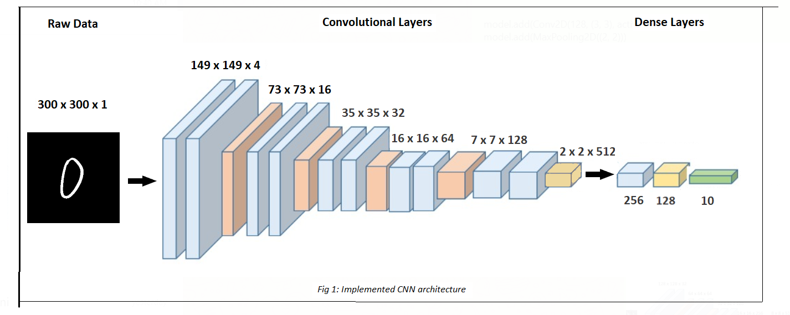
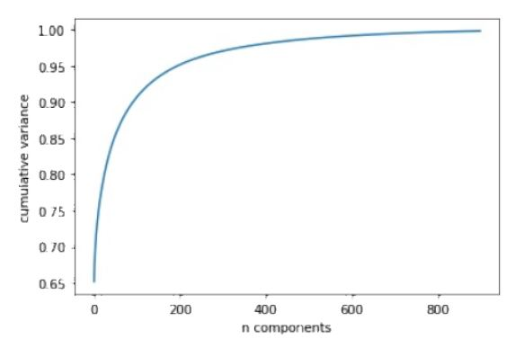
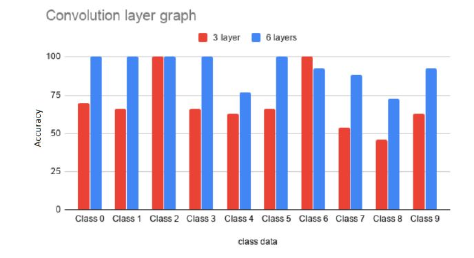
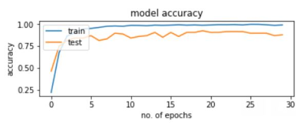
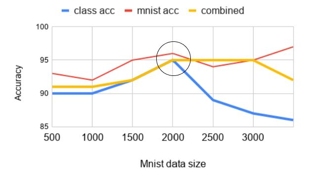

Approach & Solution
Phase 1 : Data pre-processing.
- Noise removal: Images were converted to a binary scale with all pixels with value less than 120 set to 0.
- Colour Inversion: White and black colours were switched to make the image background black.
- MNIST Data: Resized the default 28 x 28 MNIST data to 100 x 100. Padded back background to convert these images into 300 x 300.
- Split the dataset into train and test datasets
- Multiple iterations and combinations were used to determine the most accurate configuration for the network.

- Trained model is used against the unseen data to evaluate the model accuracy.
- To ensure that the model does not overfit, It is evaluated in multiple rounds
Experiments
1. Dimensionality Reduction- As shown in the graph above, nearly 900 components are required to preserve a close to 100% variance. However, due to the noise in the data, the accuracy of the model significantly dropped. Moreover, since CNN works by convolving the data and reducing the dimensions at each layer, thus an external dimensionality reduction process was discarded

- Multiple iterations were performed with different configurations for layers. Most accurate classification was observed with 6 layers

- Model was simulated for 30 epochs to determine the most accurate configuration.
- Since the model has high accuracy at 19 epochs, it was finalized as the optimal configuration.

- Accuracies were compared for source data, MNIST data and combined data to determine the number of data points to be added
- Since the highest accuracy is obtained by adding 2000 MNIST data points, it was selected as the optimal configuration.
